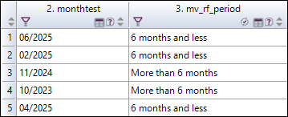
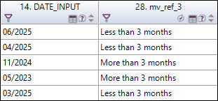

SCRIPT EXAMPLES
It is possible to insert a comment to give more details on the calculation formula used. After inserting the calculation formula, just add an apostrophe "'" and fill in your comment.

'this formula allows to calculate the average expenses per person.Mean("V1;V3;V5-V7")tot = 0
nb = 0
If Not V1.Estnonreponse then
tot = tot + 2 * V1
nb = nb + 2
EndIf
If Not V2.Estnonreponse then
tot = tot + 5 * V2
nb = nb + 5
EndIf
If Not V3.Estnonreponse then
tot = tot + 3 * V3
nb = nb + 3
EndIf
If Not V4.Estnonreponse then
tot = tot + 3 * V4
nb = nb + 3
EndIf
If Not V5.Estnonreponse then
tot = tot + 3 * V5
nb = nb + 3
EndIf
If nb <> 0 then
V = tot / nb
EndIfThis script will calculate the weighted average of 3 marks managing the non responses to one of the marks.
If V1 = 1 then
V = 0
ElseIf V1 = 2 then
V = 5
ElseIf V1 = 3 then
V = 10
ElseIf V1 = 4 then
V = 20
EndIfReplace V1 by the scale variable of your choice
n = 0
If V1.EstNonreponse then
n = n + 1
EndIf
If V2.EstNonreponse then
n = n + 1
EndIf
If V3.EstNonreponse then
n = n + 1
EndIf
If V4.EstNonreponse then
n = n + 1
EndIf
If V5.EstNonreponse then
n = n + 1
EndIf
V = n(V1 - V1.Mean) / V1.StDevIf V1 Like "Other" then
V = V2
Else
V = V1
EndIfIf V1.EstNonReponse then
V1 = V1.Mean
EndIfIf V1.EstNonReponse then
V1 = V1.Mode
EndIfMid(V1,0,InStr(V1,",") - 1)TextAfter = V1
Character = "f"
NumberOfTimes = 0
Hint = 1
DesiredResult = 3
Do While Hint <> 0
Hint = InStr(TextAfter,Character)
If Hint > 0 then
NumberOfTimes = NumberOfTimes + 1
TextAfter = Mid(TextAfter, Hint)
EndIf
Loop
Select Case DesiredResult
Case 1
V = NumberOfTimes
Case 2
V = TextAfter
Case 3
V = Str(NumberOfTimes) & " : " & TextAfter
EndSelectTo use this script, replace the desired character in the line Character = "p". One can use Character = Chr (13) to count new lines.
Rnd(0, 50)Age(V1,V2,"mm,m")V1 is the date of birth, V2 is the visit date. The result is given in decimal month here, we write "yy, y" or "yy" or "mm" or "mm,m" for other formats
nb = 0
If V1 > 0 then
nb = nb + 1
T(nb) = V1.Number
N(nb) = V1.Label
EndIf
If V2 > 0 then
nb = nb + 1
T(nb) = V2.Number
N(nb) = V2.Label
EndIf
If V3 > 0 then
nb = nb + 1
T(nb) = V3.Number
N(nb) = V3.Label
EndIf
If V4 > 0 then
nb = nb + 1
T(nb) = V4 .Number
N(nb) = V4 .Label
EndIf
If V5 > 0 then
nb = nb + 1
T(nb) = V5.Number
N(nb) = V5.Label
EndIf
permut = True
Do While permut = True
permut = False
For cpt = 1 To nb - 1
If T(cpt) < T(cpt + 1) then
permut = True
tmp = T(cpt)
T(cpt) = T(cpt + 1)
T(cpt + 1) = tmp
tmpch = N(cpt)
N(cpt) = N(cpt + 1)
N(cpt + 1) = tmpch
EndIf
Next cpt
Loop
ch = ""
For cpt = 1 To nb
ch = ch & N(cpt) & ";"
Next cpt
V = chIt is thus possible to find the best performing point and worst performing point. Validate this model then change the numbers of variables.
nb = V1
vhours = nb \ 3600
vminutes = (nb - vhours * 3600) \ 60
vseconds = nb - vhours * 3600 - vminutes * 60
If vhours <> 0 then
sthours = Str(vhours) & "h "
Elses
thours = ""
EndIf
If vminutes <> 0 thens
tminutes = Str(vminutes) & "mn "
Elses
tminutes = ""
EndIf
If vseconds <> 0 then
stseconds = Str(vseconds) & "s "
Elses
tseconds = ""
EndIf
V = sthours & stminutes & stsecondsinparentheses= Replace(v1,"\([^\)]*\)","¤")
inbrackets = Replace(v1,"\[[^\]]*\]","¤")
betweentags = Replace(v1,"<[^>]*>","¤")
V = betweentagsRemove unnecessary lines of the script and replace V1 by the variable of your choice.
If Len(V1) = 4 then
V ="0" & V1
Else
V = V1
EndIfch=V1 - 5/24The entry date is the date of the server, we want to rectify to adjust the hours to the those of the country where the survey took place. We add (subtracts) a portion of day for example -5/24 for Brazil, +11/24 for Western Australia.
ch = Replace (V1," ; ","_")
V = chIn this example, the purpose is get the different types of sports (categories) from the activities selected in question Activities.


vtemp= ""
if v2 in ("swimming;windsurfing;rafting;canoeing") then
vtemp=vtemp & ";" & "Water sport"
endif
if v2 in ("walking;hiking;bicycle;horse riding;fishing") then
vtemp=vtemp & ";" & "Nature sport"
endif
if v2 in ("skiing;nordic walking") then
vtemp=vtemp & ";" & "Winter sport"
endif
if v2 in ("gliding;tennis") then
vtemp=vtemp & ";" & "Other sport"
endif
v=vtempIn this example, the purpose is get the different types of sports (categories) from the answers to the questions: hiking, canoeing and skiing.

If hiking in "Yes" then
Vtemp= "Nature sport"
else
Vtemp=""
endif
If canoeing in "Yes" then
Vtemp2= "Water sport"
else
Vtemp2=""
endif
If skiing in "Yes" then
Vtemp3= "Winter sport"
else
Vtemp3=""
endif
V= Vtemp & ";" & Vtemp2 & ";" & Vtemp3
Vtemp=""
If Maximum("France;Spain;Italy")=France then
Vtemp=vtemp & "France" & ";"
endif
If Maximum ("France;Spain;Italy")=Spain then
Vtemp=vtemp & "Spain" & ";"
endif
If Maximum ("France;Spain;Italy")=Italy then
Vtemp=vtemp & "Italy" & ";"
endif
v=Vtemp
Absolute frequency of BMW brand for men.
brand.Frequency("BMW","gender=\"1\"")Absolute frequency of BMW brand for men using diesel.
brand.Frequency("BMW","gender=\"1\" and fuel=\"diesel\"")Absolute frequency of BMW brand for men using any type of fuel.
brand.Frequency("BMW","gender=\"1\" and fuel in \"1;2;3;4;5\"")Backslashes before the modalities numbers are used to specify that you are using the number of a modality, not its label (useful particularly when the labels include numbers as it would be the case for a rating between 0 and 10 for instance).
To filter with several modalities, you need to use the keyword in followed by the list of modalities divided by semi-colons framed by quotation marks.
If you apply a function (percentage, for example) to a profile, you have to frame the profile with quotation marks. So if you need to use quotation marks in the profile definition expression, you need to "escape" them with a backslash (\)/
6 months moving reference

if Age(month,"mm")<=6 then
v="6 months and less"
else
v="More than 6 months"
endif3 months moving reference

If year(now)=year(date_input) and ((month(now)-month(date_input))<=3) then
v="Less than 3 months"
elseif year(now)-year(date_input)=1 and ((month(now)+12-month(date_input))<=3) then
v="Less than 3 months"
else
v="More than 3 months"
endifv=Replace(Comment,"\r\n", " ")temp = ""
For i = 1 to 5
alea = Rnd(1, 10) & ";"
Do While temp Containing alea
alea = Rnd(1, 10) & ";"
Loop
temp = temp & alea
Next i
V=tempIn this example, the purpose is to display the turnover for 2019 from the variables turnover and year by typing the following script directly in a view analysis.
[turnover.sum("[Year] in\"2019\"")]
There are 7 numerical variables (V31 => V37).
The goal is to count the number of 0.

Script 1:
vtemp=0
v_val(1)=v31
v_val(2)=v32
v_val(3)=v33
v_val(4)=v34
v_val(5)=v35
v_val(6)=v36
v_val(7)=v37
For i = 1 to 7
if v_val(i)=0 then
vtemp=vtemp+1
endif
Next
v=vtempScript 2:
vtemp=0
For i = 31 to 37
if eval("v" & i)=0 then
vtemp=vtemp+1
endif
Next
v=vtemp[NumberOfObservations("date_arrival>\"31/07/2020\"")]vtemp(1)=1
vtemp(2)=2
vtemp(3)=3
vtemp(4)=4
vtemp(5)=5
vtemp(6)=6
vtemp(7)=7
alea=Rnd(1,7)
v=eval("vtemp(" & alea & ")")
Vtemp=Duration([arrival],[departure])
V=FormatDuration(Vtemp,"j","h\h\ m\m\ s\s\")
NumberOfObservations("Activites in \"Idleness;Fishing;Tennis\"")
NumberOfObservations("Activites in \"1;2;3\"")v=NumberOfObservations("v2 in\"" & v2.string & "\"")*v2 to be replaced with the variable to use in your study.